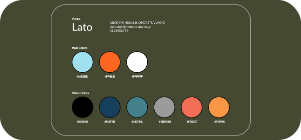

LatihID's UI/UX Intern Applicant Case Study
Project Overview
LatihID is an online nonprofit learning platform that aims to improve the skills and competences of small and medium enterprises (SMEs) throughout Indonesia by providing high-quality and low-cost training modules.
In January 2021, LatihID offers an internship program for undergraduate students. In this opportunity, I was applying for the UI/UX Designer Intern position. During my application, I was tasked to evaluate and analyze their current homepage, then make a high fidelity prototype from what I have been evaluated.
Identify and Analyze the Pain Points
For the first step, I did a heuristic analysis to evaluate the performance of the homepage regarding to its interface. I also invited my partner, Rafli, to gain other user perspectives. Here are some things we have been discovered:
- Inconsistencies in some buttons, content, and language used
- Asymmetrical card size
- The visibility of some content needs to be improved (contrast, theme used, and size)
Design Solutions
Regarding to the pain points that previously has been mentioned, I try to solve the problem here. I used Figma to help me built the improved homepage of LatihID. I wanted to develop something that is still close to the startup's identity, so I took colors mainly from LatihID's logo and combine it with the colors they have been used in their original homepage.

Final Prototype
Finally, I finished the task. Here is what I have improved.
| Before | After |
|---|---|
I reduced the complexity in Kelas Gratis Populer, Kelas LatihID Terbaru, LatihID Expert Class, LatihID Modul, LatihID Talks, LatihID PETA, Kelas Memulai Bisnis, Kelas Pemasaran, Kelas Manajemen Operasional into only one section, "Program Kami" section. We do not want to confuse the user with many options offered or displayed on their screen, right?
I want the user to get more focus on LatihID's programs (LatihID Modul, LatihID Talks, LatihID PETA, and LatihID MAJU). With the solution I offered, the users can also see the entire LatihID program and browse all the sub-programs on one screen without the need to scroll or move. I also differentiate them by adding features like sorting and filtering so that the user can find their needs easily. They can search their needs based on price range, popularity, latest, categories, etc.
Archive
- LatihID Case Study (written in Bahasa) - click here to access